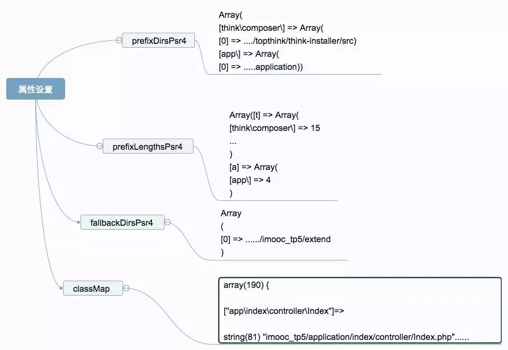
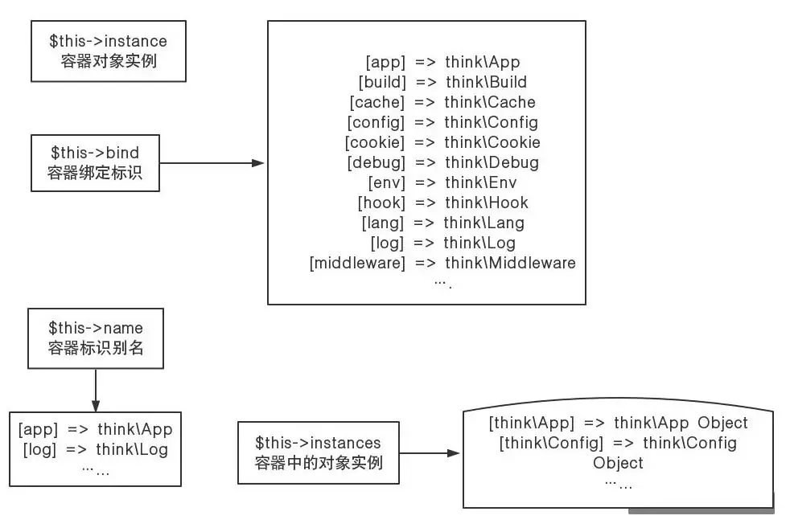
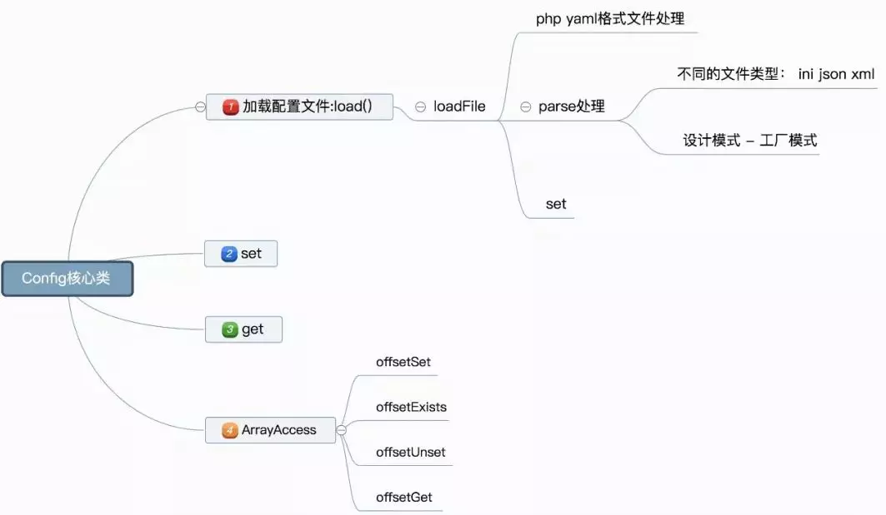
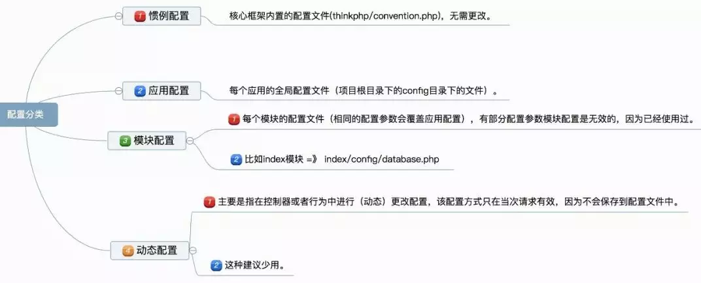

工作这么多年，也面试过很多PHP工程师，我发现很多PHP工程师只停留在使用框架的层面，然而对框架底层根本没有深入去了解，那么这就会给自己的职业生涯带来一定的瓶颈，当遇到问题的时候你就无从下手，不知道如何去排查与调试，更别说去扩展核心库，相反，如果大家对框架底层源码有一定的了解，这样的问题就变得简单很多, 学习某一项语言都是需要耐心，学习框架贵在坚持，这会让你对PHP全局以及框架底层有质的飞跃。
总而言之：搞技术的，既然入坑了，就得知道一个理念:知其然还得知其所以然，停留在会用阶段，职业生涯肯定走的不远！因为你没有深入。。。
那么有小伙伴就开始质疑了，那我要如何选择一门框架呢？就拿PHP来说吧，PHP有N多框架，比如YII，ThinkPHP，laravel等等，这几个都有自己的优势和特点，在国内ThinkPHP确实用的很多，这里其实我想表达的是：不管你学习哪个框架并不重要，我们需要选择一个然后安心的学好它的底层，学习需要坚持，耐心+时间，比如你学会了一个框架之后，那么其他框架你自学下很快就会上手，因为框架的核心思想基本是相通的，它们的基础都是PHP，不要想得太复杂。那么现在就就拿ThinkPHP来举例，我们如何学习他的底层呢？
我们可以从以下几个方向入手：
一、 框架中是如何加载这些类库的？
学习框架底层如何加载类库这一步是必须的，因为我们要知道框架是如何加载不同目录下的不同文件，如果是框架通过composer安装的类库，同样我们都要弄清楚是如何被加载到框架的，那我们就要从think\Loader.php文件入手了。接下来如何做？所以学习框架底层一定要带着问题和思考的态度去学习，这样成长肯定很快。
比如我想自己创建一个自定义leifeng目录 也想把它被加载到框架中，当你了解了如何加载文件的，也试试加载自己定义的文件吧。这个时候恭喜你底层第一步你搞懂了。
二、设计模式学习(工厂模式、单例模式、注册树模式、门面模式等)
你想提升自己php的技能，那你就必须学习一下设计模式，虽然这个经常在面试中遇到，但是希望你不仅仅只是为了应付面试，而是要真正的弄清楚什么是设计模式。我之前整理过，可以看看这个教程
三、反射机制学习
什么是反射呢？
在PHP的面向对象编程中的对象，它被系统赋予自省的能力，而这个自省的过程，我们把它叫做反射。
我们对反射的直观理解可以是，根据达到地，找到出发地和来源这么一个过程，通俗来讲就是，我给你一个光秃秃的对象，完事你可以根据这个对象，知道它所属的类，拥有哪些方法。
在PHP中，反射是指在PHP运行状态中，扩展分析PHP程序，导出或者提取出关于类、属性、方法、参数等的详细信息，包括注释。这种动态获取信息以及动态调用对象方法的功能，被称为反射API。
四、依赖注入 控制反转
经常听过吧，是否有去了解，敲敲代码实现一下。简单了解一下
(1)依赖注入是从应用程序的角度在描述，可以把依赖注入，即：应用程序依赖容器创建并注入它所需要的外部资源；
(2)而控制反转是从容器的角度在描述，即：容器控制应用程序，由容器反向的向应用程序注入应用程序所需要的外部资源.
我之前整理过，可以看看这个教程
五、研究TP框架中的容器、门面Facade think/Container think\Facade
六、路由
以上2-6点的具体分析 可以直接通过index.php入口文件去跟进，看看框架里面走了哪些流程，如何实现，用到哪些工具栏，环境变量，如何配置等等。
说到框架的路由是如何做的，通过跟进，我们会在App类中 在routeInit路由初始化这个方法，它是路由的核心，具体基础路由类库是如何引入的。你都能看的明白的
七、底层控制器、模型、视图的基础类库分析
八、其他一些工具类的分析
比如：异常处理、缓存等核心类库分析。
以上这些基本上涵盖了框架的核心内容，代码本来就是很枯燥的一个东西，在研究框架底层这个过程更是枯燥和痛苦的，但是我们需要坚持【坚持下来就能改变世界了】阅读框架代码不是看一遍就完事了，看不懂，我们就多看几遍，并且在看的过程中我们还需要做点如下几点：
1、在你有疑问的地方打上断点，输出相关的内容出来 看看他到底返回什么内容，因为这样更加直观，便于你真正意义上理解
2、我们需要思考它为什么要这样做？我这样做可以吗？能不能变通、或者有没有更好的方法？因为带着问题和思考的态度去学习 更加有利于你的个人成长
3、在研究源码的时候有不懂得地方肯定很正常的，这个时候一定要记住多利用百度或者谷歌
4、有个讲师提醒我，一定要多画图， 因为您去研究源码然后还能通过图的方式画出来 这更加有基于您学习以及深入理解，它真的能起到事半功倍的作用！
比如下面的图解：
类自动加载的时候会用到的一些属性，并且类的自动加载和他们息息相关




在这里我主要是想表达我们一定要边看源码，边通过图例记录下来，深入理解，对你学习很有帮助的。写到这里，感谢阅读！
给大家分享一个学习群 笔试面试题以及php进阶的学习资料都更新在群里 欢迎大家一起来学习